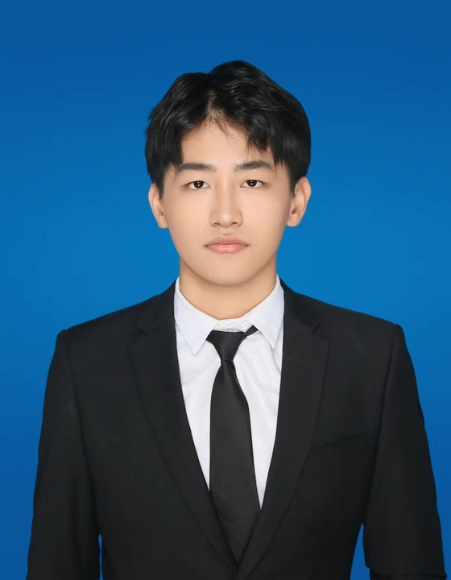

2025.05—2025.08
育才生态区管委会发改局
实习生 · 海南海口
参与政策材料、会议纪要、数据整理和宣传文案编制；负责骑行驿站项目招商材料梳理与文案结构优化，形成对外沟通材料。
FOOD × AI / APPLIED INTELLIGENCE
食品加工与安全硕士，专注将食品与科研场景中的真实问题，转化为可运行、可评测、可交付的 AI 应用。

WORK EXPERIENCE
实习生 · 海南海口
参与政策材料、会议纪要、数据整理和宣传文案编制；负责骑行驿站项目招商材料梳理与文案结构优化，形成对外沟通材料。
GPA 3.87 · 专业排名前 10%
以食品真实性、光谱检测和科研数据分析为主要实践方向，持续将专业知识转化为 AI 应用方案。
SELECTED PROJECTS
把专业问题做成可交付的 AI 方案
让食品光谱模型识别未知风险，并随新类别持续扩展
个人独立项目 · 项目负责人 · 2026.03—2026.06
独立负责真实光谱实验、持续学习算法、Agent 工作流和工程交付，将未知掺假物识别、人工确认、专家注册、类别/比例预测与风险报告接入同一套系统。
设计共享多类别仲裁器、顺序专家注册、统一动态路由和类别/比例联合学习；完成 240 个核心实验单元、432 个消融实验单元。
编排标签请求、人工确认、增量训练、质量门控与专家注册，在两种类别到达顺序下完成两个新类别的连续注册和后续预测。
实现模型 Bundle、状态持久化、进程重启恢复、结构化证据包和离线 Replay；接入 LLM + RAG 决策监督器，完成 24 个真实决策案例。
食品真实性证据型科研智能体
个人项目负责人 · AI 方案设计与应用实现 · 2026.07—2026.08
围绕食品真实性研究中的检索、比较和方案设计，搭建可回到原文证据的科研工作流，帮助研究者快速形成有依据的结论。
本专业实践材料自动化 Skill
个人项目负责人 · Skill 设计与工作流自动化 · 2026
将内容组织、模板套用、格式校验和交付验收抽象成可复用 Skill，解决批量材料制作中的重复劳动和一致性问题。
领域问答模型 LoRA 微调
个人项目 · LLaMA-Factory / SFT
围绕领域问答场景整理指令数据，完成 LoRA 监督微调、训练产物管理和推理复核，建立微调前后人工对比流程。
COMPETITIONS
队长、核心建模。围绕花椒品质分级完成数据整理、视觉模型设计和结果分析；处理约 7.1 万张公开图像，在 ResNet50 上设计主-侧双分支，加入 CBAM、多尺度特征融合和 Grad-CAM，测试集 Accuracy/F1 均为 99.54%，AUC 为 99.97%。
队长、主要负责人。围绕天气、花期与旅游决策构建“预测—评价—规划”闭环，负责多源数据处理、GRU 时间序列预测、多模型集成、熵权-TOPSIS 综合评价、路线规划与论文统筹；天气预测准确率 82.04%，花期预测 MAE 6.88—9.95 天。
CAPABILITIES
场景拆解 · 需求定义 · 工作流设计 · 指标设计 · 原型验收
RAG · Agent 编排 · MCP · Skill 设计 · 项目记忆 · EvidenceSpan
Python · FastAPI · Vue · SQLite · PyTorch · scikit-learn · Git · Docker
MORE ABOUT ME
从专业场景出发，先拆解问题与用户目标，再定义数据对象、模型流程和验收指标。通过小步迭代把想法变成能运行、能复盘的工具。
AI 应用、Agent 产品、行业 AI 解决方案、数据分析或模型适配方向的校招机会，期待在真实业务中持续积累。
LET'S CONNECT